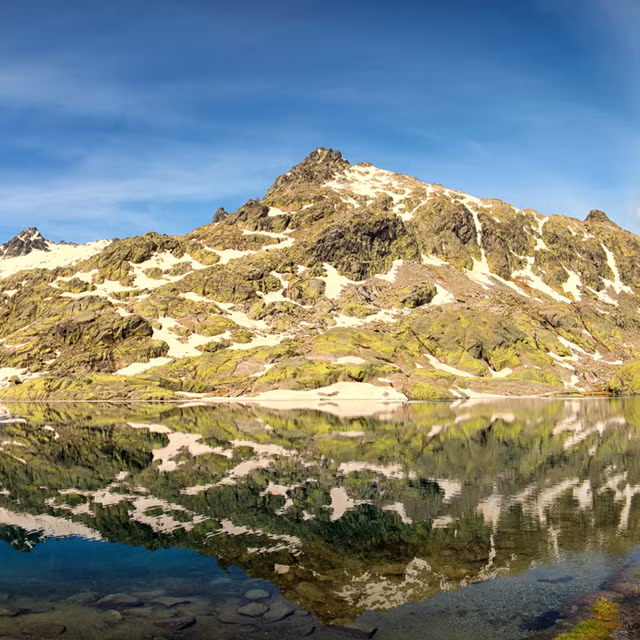
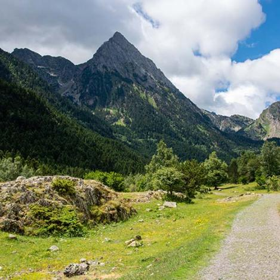
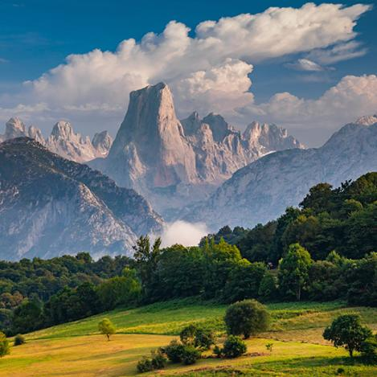

Información principal.
Descubre la diversidad natural de España a través de su red de parques nacionales, desde las altas cumbres de los Picos de Europa o Sierra Nevada hasta los humedales de Doñana y las islas volcánicas de Canarias. Planifica rutas de senderismo, observa fauna única y conoce las normas de conservación para disfrutar de estos espacios protegidos de forma responsable durante todo el año.
Sierra de Gredos.

La sierra de Gredos pertenece al Sistema Central y está situada entre las provincias de Ávila, Cáceres, Madrid y Toledo. Su máxima altitud está en la provincia de Ávila, en la Plaza del Moro Almanzor, con 2.592 metros. Fue declarada parque regional y es una de las sierras más extensas del Sistema Central. Se compone de cinco valles fluviales: Alto Tormes, Alto Alberche, Tiétar Oriental, Tiétar Occidental y la Vera, y valle del Ambroz.
Pirineos.

Los Pirineos son una cordillera montañosa situada al norte de la península ibérica, entre España, Andorra y Francia. Se extienden a lo largo de unos 415 km desde el mar Mediterráneo, en el cabo de Creus, hasta el mar Cantábrico, cerca del golfo de Vizcaya. En su parte central tienen una anchura de unos 150 km. Su nombre cambia según el idioma: Pirineos en español, Pyrénées en francés, Pirineus en catalán y Perineus en aragonés.
Picos de Europa.

Los Picos de Europa son un macizo montañoso del norte de España que forma parte de la cordillera Cantábrica. Aunque no son muy extensos, tienen muchos accidentes geográficos de gran interés. Se reparten entre Asturias, Cantabria y León, y sus alturas superan en muchos casos los 2.500 metros. Están muy cerca del mar Cantábrico, a unos 15 kilómetros en su punto más cercano, y ocupan una superficie de más de 64.000 hectáreas.